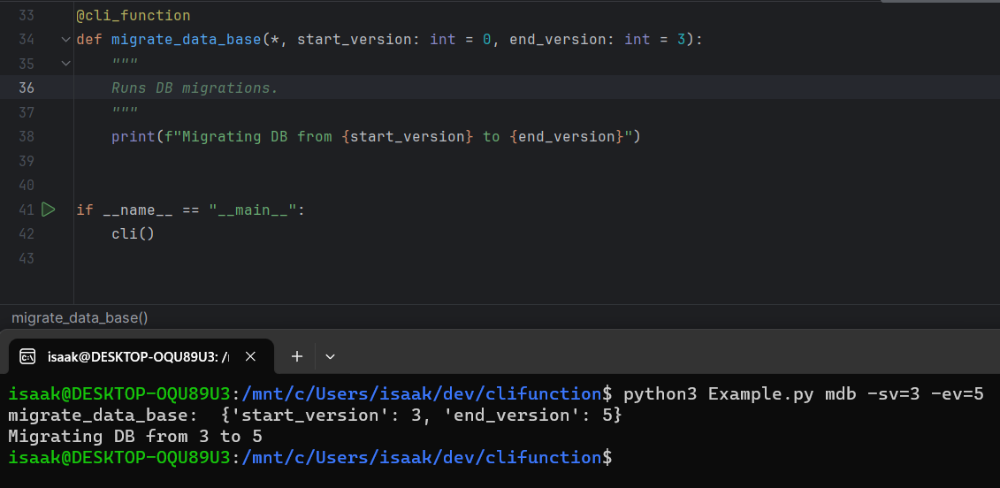

clifunction
Introduction
clifunction makes building and maintaining command line utilities easier than ever by using the annotations included in modern python versions, Here is a quick look:

Getting Started
- Fully annotate a python function you want to call externally, and add the cli_function decorator:
@cli_function
def migrate_data_base(*, start_version: int = 0, end_version: int = 3):
"""
Runs DB migrations.
"""
print(f"Migrating DB from {start_version} to {end_version}")
- Call your function from the command line:
isaak@laptop:/mnt/c/Users/isaak/dev/clifunction$ python3 Example.py migrate_data_base
migrate_data_base: {}
Migrating DB from 0 to 3
- Call your functions by auto-generated alias's, and handle Pythons built-in types:
isaak@laptop:/mnt/c/Users/isaak/dev/clifunction$ python3 Example.py mdb -sv=4 --end_version=5
migrate_data_base: {'start_version': 4, 'end_version': 5}
Migrating DB from 4 to 5
- Documentation, Error handling, and Man pages are all automatically generated:
isaak@laptop:/mnt/c/Users/isaak/dev/clifunction$ python3 Example.py
Example.py
deploy -- builds*, tests*, and then deploys the project
build_first | default:True | type:<class 'bool'>
test_first | default:True | type:<class 'bool'>
build -- Bundles python project for distribution
test -- Execs out to PyTest to run the test suite
migrate_data_base -- Runs DB migrations
start_version | default:0 | type:<class 'int'>
end_version | default:3 | type:<class 'int'>